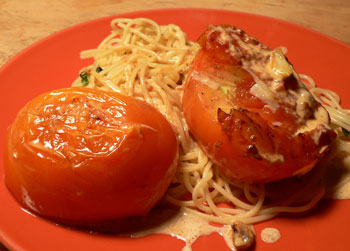

Tomates à la crème
Tomates à la crème
Elizabeth David turned me on to a wonderful little book called Cooking with Pomiane. It’s a collection of writings and recipes from the early food scientist Édouard de Pomiane, and it’s brilliant. He writes his recipes as though he’s making them with you (“Now I boil the meat for three minutes, but it is not done. I boil it another minute, and it is perfect,” etc.). He spends much of his time lamenting the end of the era when women cooked all day, but he gives plenty of simple recipes that use just a few ingredients. I suspect his name and recipes will appear on this blog on a regular basis. Tonight, I tried one that’s actually in David’s book, tomates à la crème:

I hated to cook the hell out these Greenmarket tomatoes, but of course they were wonderful, and they did maintain their integrity somewhat. Pomiane’s recipe doesn’t mention pasta, but we were without bread and I knew we’d want some starch for the sauce.
Tomatoes with cream is as simple as it sounds: Melt a few tablespoons of butter over medium heat. Cut some tomatoes in half. Season the cut side, and poke a few holes in the round side. When the butter is hot, cook the tomatoes cut-side down for five minutes. Turn them and cook over lower heat for ten minutes. Turn again, let the juice run out, then turn a final time. Pour in a bit of cream to mix with the tomato juice, and serve (you could be making pasta, rice, or croutons while you wait). I added garlic and basil to the recipe as well, and a bit of grated gruyère (don’t worry, mom, I did swim a few laps today!). It would have been just as good without these embellishments.
Comments
It sounds like a charming book and the meal looks delicious.
Leland, these sound wonderful. I am still having my first tomatoes of the season, so I’m not cooking them yet, but I will be remembering this one as the season rolls on.
Cooking with Pomiane is a GREAT book! I have charmed many a guest with his chicken sauteed with tomatoes and garlic (I can’t remember the official name of the dish).
Thank you, ladies! It is a charming book, and I’m not surprised you know it, Luisa. I’ll look for that recipe and give it a try. He’s so funny.
Add a comment